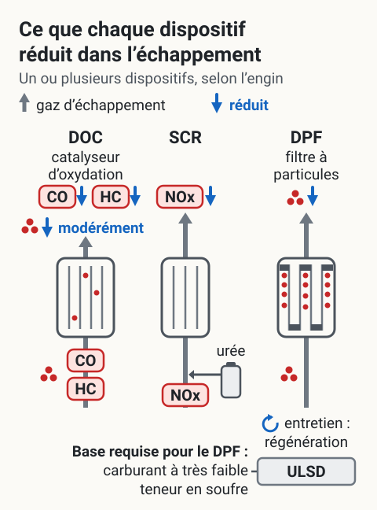
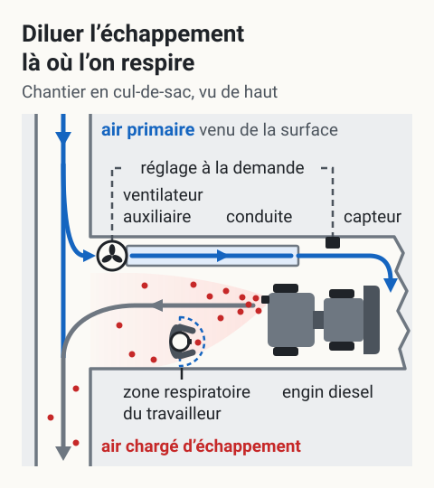
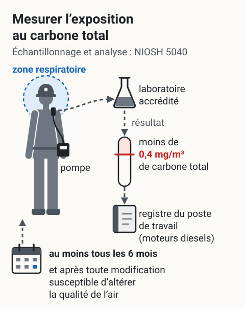

Gestion des moteurs diesel sous terre
Les émissions diesel (DPM) en mine souterraine sont classées cancérogène certain (CIRC 1, 2012). La maîtrise demande une combinaison de modernisation de la flotte, de post-traitement, de ventilation primaire suffisante et de cabines protégées. Plusieurs configurations sont possibles selon l'âge du parc, la profondeur et le calendrier d'électrification.
Pourquoi en parler
- Risque humain : cancer du poumon, MPOC, irritation chronique, exposition combinée à NOx et CO.
- Cadre réglementaire en évolution : durcissement aux États-Unis et au Canada, valeurs limites en révision (mesure du carbone élémentaire EC comme proxy).
- Risque juridique : reconnaissance LATMP du cancer poumon attribuable au DPM se précise ; les expositions documentées sur 20-30 ans engageront la responsabilité de l'employeur.
- Risque opérationnel : exigences de ventilation principale en hausse continue, coûts d'air comprimé, modernisation de la flotte ; transition vers l'électrification mobilise du capital.
Options et leviers
 Toucher l'image pour l'agrandir
Toucher l'image pour l'agrandir
Les leviers se situent à quatre niveaux, du moteur jusqu’au travailleur, et la maîtrise des émissions demande de les combiner. Plusieurs configurations sont possibles selon l’âge du parc, la profondeur et le calendrier d’électrification.
Lire le schéma en texte
- Vue en coupe d’une galerie. Une chargeuse diesel roule vers la gauche ; son opérateur est dans une cabine fermée. De l’échappement, à l’arrière de l’engin, un panache de points rouges, « émissions », dérive vers la tête d’un travailleur à pied, qui porte une protection respiratoire.
- À la source, le moteur : renouvellement vers des moteurs récents (Tier 4 Final), engins électriques à batterie, carburant (ULSD ou carburants alternatifs).
- Sur l’échappement, un dispositif posé sur le tuyau : filtre à particules (DPF), catalyseur d’oxydation (DOC), SCR pour les NOx.
- Dans l’air, un ventilateur et sa conduite amènent de l’air frais (flèches bleues) qui dilue le panache : ventilation primaire, ventilation auxiliaire, ventilation à la demande.
- Autour du travailleur : cabine pressurisée avec filtration HEPA pour l’opérateur ; protection respiratoire pour l’entretien ou les tâches près d’un échappement. Mention en bas : « La maîtrise demande une combinaison de ces leviers. »
D’après l’introduction de la page et quatre tableaux de cette section (flotte et motorisation ; post-traitement et carburant ; ventilation souterraine ; EPI et procédures). Ventilation qui dilue les contaminants des gaz d’échappement, exposition mesurée au niveau de la zone respiratoire du travailleur : RSSM, art. 102, 1°. Schéma de principe : les leviers sont posés là où ils agissent ; ni efficacité comparée ni seuil.
Flotte et motorisation
| Option | Considérations |
|---|---|
| Renouvellement vers moteurs Tier 4 Final (norme EPA, faible particule + NOx) | Investissement élevé, baisse drastique des émissions |
| Conversion / acquisition d'engins électriques (BEV) | Élimine le DPM à la source, demande infrastructure (charge, batterie, gestion thermique) |
| Maintien parc Tier 2-3 avec post-traitement (DPF, SCR) | Coût plus bas, performance partielle, demande maintenance |
| Flotte mixte (BEV + diesel Tier 4) avec planification d'électrification graduelle | Lissage de l'investissement, gestion du risque transition |
Post-traitement et carburant
{kind=link}

Toucher l'image pour l'agrandirLes dispositifs de post-traitement ne réduisent pas tous les mêmes contaminants ; selon l’engin, on en pose un ou plusieurs. Le RSSM exige par ailleurs que chaque moteur diesel utilisé dans une mine souterraine soit muni d’un dispositif d’épuration ou de dilution des gaz d’échappement, et il plafonne la teneur en soufre du carburant diesel.
Lire le schéma en texte
- Trois dispositifs sont dessinés en coupe, côte à côte et non en série : selon l’engin, on en pose un ou plusieurs, et le dessin ne donne aucun ordre de montage. Dans chacun, les gaz d’échappement entrent par le bas (flèche grise) ; ce que le dispositif réduit est marqué d’une flèche bleue vers le bas.
- Catalyseur d’oxydation (DOC) : il réduit le CO et les hydrocarbures (HC), et modérément les particules.
- SCR : il réduit les NOx ; un petit réservoir lui fournit de l’urée.
- Filtre à particules (DPF) : les particules restent dans les parois de son nid d’abeilles ; il demande un entretien régulier (régénération).
- En bas, la base requise pour le DPF : un carburant à très faible teneur en soufre (ULSD).
D’après le tableau « Post-traitement et carburant » de cette page. Obligations rappelées dans la légende : RSSM, art. 102, 4° et 6° (teneur en soufre du carburant diesel, dispositif d’épuration ou de dilution). Schéma de principe : ni ordre de montage ni rendement chiffré.
| Option | Considérations |
|---|---|
| Filtres à particules diesel (DPF) sur engins existants | Réduit 90 %+ de la masse particule, maintenance régulière (régénération) |
| Catalyseur d'oxydation diesel (DOC) | Réduit CO, HC, modérément les particules |
| SCR / EGR pour les NOx | Demande urée, complexité |
| Carburant à très faible teneur en soufre (ULSD) | Standard moderne, base requise pour DPF |
| Carburants alternatifs (HVO, biodiesel B20+) | Réduction CO2 et particules, supply chain à structurer |
Ventilation souterraine
{kind=link}

Toucher l'image pour l'agrandirLa ventilation doit permettre de diluer les contaminants des gaz d’échappement là où le travailleur respire : le RSSM fixe les valeurs d’exposition à respecter, mesurées au niveau de sa zone respiratoire. Tout moteur diesel se trouvant dans la zone affectée par l’arrêt d’un ventilateur doit être arrêté dans un délai de 15 minutes.
Lire le schéma en texte
- Vue de haut. À gauche, une galerie où descend l’air primaire, de l’air frais venu de la surface (flèches bleues). Un chantier en cul-de-sac s’en détache vers la droite, jusqu’au front.
- À l’entrée du chantier, un ventilateur auxiliaire prend l’air frais dans la galerie et le pousse dans une conduite jusqu’au front (flèches bleues).
- Près du front travaille un engin diesel. Ses gaz d’échappement (points rouges), serrés à la sortie, s’espacent en repartant avec l’air vers la galerie (flèche grise) : ils se diluent. Un travailleur se tient sur ce trajet ; devant son visage, un demi-disque pointillé marque sa zone respiratoire, où il ne reste que peu de points.
- Ventilation à la demande : un capteur fixé près du front est relié au ventilateur auxiliaire par un câble pointillé, « réglage à la demande ». Selon la page, elle « optimise l’énergie, demande capteurs et logiciel ». Quand plusieurs engins diesel sont utilisés en même temps dans le même circuit de ventilation, la quantité d’air frais doit tenir compte de chacun (RSSM, art. 102, 2°).
- L’air chargé d’échappement rejoint la galerie en aval de la prise d’air du ventilateur et s’en va (flèche grise, points rouges espacés).
D’après le tableau « Ventilation souterraine » de cette page (air primaire, ventilation auxiliaire dans les chantiers actifs, ventilation à la demande). Ventilation qui dilue les contaminants des gaz d’échappement, valeurs mesurées au niveau de la zone respiratoire du travailleur : RSSM, art. 102, 1° ; plusieurs engins dans le même circuit : art. 102, 2° ; arrêt des moteurs diesels quand un ventilateur s’arrête : RSSM, art. 105. Schéma de principe : ni débit ni distance à l’échelle.
| Option | Considérations |
|---|---|
| Augmentation du débit d'air primaire | Solution directe mais coût énergie important |
| Ventilation auxiliaire dans les chantiers actifs | Cible les zones à forte densité diesel |
| Ventilation à la demande (VOD, AI) | Optimise l'énergie, demande capteurs et logiciel |
| Cabines de salle de contrôle pressurisées | Protège opérateurs sédentaires |
EPI et procédures
| Option | Considérations |
|---|---|
| Cabines pressurisées avec filtration HEPA sur engins | Investissement modéré, protection significative de l'opérateur |
| Protection respiratoire (APR) P100 pour entretien d'engins ou tâches à proximité directe d'échappement | EPI ciblé, demande essai d'ajustement |
| Procédure de démarrage à froid (à l'extérieur ou en zone très ventilée) | Coût zéro, à intégrer dans formations |
| Délai post-démarrage avant entrée en zone | Coût opérationnel modéré |
Mesure et surveillance d'exposition
{kind=link}

Toucher l'image pour l'agrandirLe RSSM exige de mesurer l’exposition au carbone total au niveau de la zone respiratoire du travailleur, selon la méthode NIOSH 5040 et avec un laboratoire accrédité ; la valeur d’exposition moyenne pondérée doit être inférieure à 0,4 mg de carbone total par mètre cube d’air. Le résultat est inscrit au registre du poste de travail concernant les moteurs diesels.
Lire le schéma en texte
- Un travailleur porte une pompe à la ceinture. Un tube la relie à une petite tête de prélèvement fixée au col, dans sa zone respiratoire : un disque pointillé bleu centré sur sa tête.
- Un trajet pointillé part de la tête de prélèvement vers un laboratoire accrédité (un flacon). Sous le titre : échantillonnage et analyse selon la méthode NIOSH 5040. Le RSSM précise que le laboratoire doit être accrédité selon une norme reconnue telle que la norme internationale ISO/CEI 17025, par un organisme d’accréditation reconnu.
- Le trajet continue, marqué « résultat », jusqu’à une jauge barrée d’un trait rouge : « moins de 0,4 mg/m³ de carbone total ». La partie de la jauge au-dessus du trait est teintée de rouge ; aucun résultat n’y est placé.
- Il aboutit au « registre du poste (moteurs diesels) » : le résultat des mesures est inscrit dans le registre du poste de travail concernant les moteurs diesels.
- En bas, un calendrier relié au travailleur par une flèche : mesurer au moins une fois à tous les 6 mois, et à la suite de toute modification susceptible d’altérer la qualité de l’air. La stratégie d’échantillonnage suit les pratiques usuelles de l’hygiène industrielle résumées dans le Guide d’échantillonnage des contaminants de l’air en milieu de travail de l’IRSST (RSSM, art. 103.1, 3°).
D’après le tableau « Mesure et surveillance d’exposition » de cette page. Méthode NIOSH 5040, laboratoire accrédité, valeur inférieure à 0,4 mg de carbone total par mètre cube d’air, mesurée au niveau de la zone respiratoire : RSSM, art. 102, 1° et 1.1°. Fréquences, stratégie d’échantillonnage et registre : RSSM, art. 103.1. Zone respiratoire, un hémisphère devant le visage : RSST, art. 1. Schéma de principe : aucun résultat de mesure n’est représenté.
| Option | Considérations |
|---|---|
| Mesures au moins tous les 6 mois, en carbone total (RSSM, art. 102 et 103.1 ; NIOSH 5040) | Minimum exigé en mine souterraine, avec une mesure après toute modification susceptible d'altérer la qualité de l'air ; comparable site à site |
| Mesure en continu de CO et NO2 (système fixe + portatifs) | Détection rapide des dérives |
| Cartographie par GHE (foreurs, opérateurs LHD, mécaniciens) | Soutient les décisions de modernisation et d'EPI |
| Bilan annuel d'émissions de la flotte (g/h NO2, g/h DPM par engin) | Pilotage de la modernisation |
| Une option possible consiste à combiner une feuille de route d'électrification sur 5-10 ans, un programme de DPF systématique sur les engins encore en parc, et un investissement ventilation à la demande sur les chantiers les plus actifs. |
Indicateurs à suivre
| Indicateur | Utilité |
|---|---|
| Concentration moyenne EC par GHE (µg/m³) | Performance d'ensemble |
| % d'engins équipés de DPF / Tier 4 / électriques | Progression de la modernisation |
| Émissions annuelles totales de la flotte (DPM, NOx) | Tendance pluriannuelle |
| Nombre d'alarmes CO/NO2 sur détecteurs portables | Risque résiduel terrain |
| Heures de fonctionnement annuelles par engin diesel | Pilotage de la rotation et du renouvellement |
| Débit d'air primaire (m³/s) vs demande modèle de ventilation | Adéquation ventilation |
| Cas LATMP cancer poumon liés au site (lente à apparaître mais critique) | Indicateur tardif majeur |
Arbitrages typiques
| Arbitrage | Considérations |
|---|---|
| Vitesse d'électrification de la flotte | Capital initial vs baisse pérenne du DPM et des coûts de ventilation |
| Investir en ventilation supplémentaire vs moderniser la flotte | Pour le DPM, moderniser la flotte est généralement plus efficace à long terme |
| Cabine pressurisée systématique vs APR individuel | La cabine protège peu importe le port d'EPI |
| Maintenance interne du parc DPF vs sous-traitance | Selon expertise et taille du parc |
| Communication aux travailleurs sur la classification CIRC 1 du DPM | La transparence aide à expliquer les investissements et l'EPI |
Cadre légal
- LSST art. 51 : obligations générales.
- RSST : VEMP applicables aux gaz de tir et d'échappement (CO 35 ppm, NO2 3 ppm). L'annexe I n'a pas de valeur pour le DPM ; en mine souterraine, le RSSM fixe moins de 0,4 mg de carbone total par m³ d'air (art. 102), mesuré au moins tous les 6 mois (art. 103.1).
- RSSM : qualité de l'air souterrain, ventilation principale, exigences spécifiques aux moteurs diesel souterrains.
- Loi canadienne sur les transports et normes EPA / Environnement Canada pour les motorisations diesel hors route.
- Annexe I LATMP : cancer du poumon (lien CIRC 1 du DPM peut soutenir une réclamation).
Limites du rôle SST
Le département SST documente les expositions, propose la stratégie d'EPI et les paramètres de ventilation, et alerte sur les non-conformités. Les décisions d'investissement en flotte, en infrastructure électrique, en ventilation supplémentaire et en calendrier d'électrification relèvent de la direction du site et de la maintenance, en coordination avec la production, l'ingénierie de mine et le comité SST.